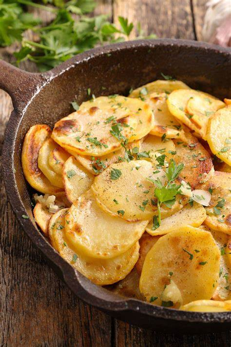
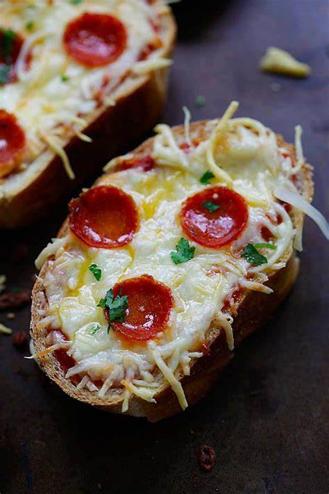
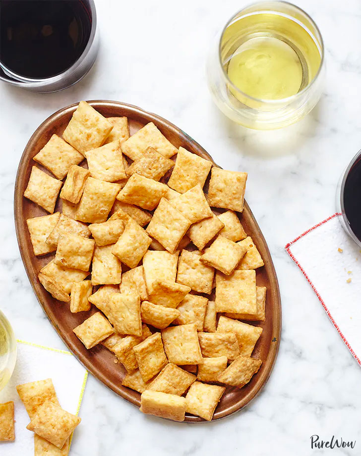

Happiness is always having the next snack prepared
Stay snactive!
_____________________________________________________________________
(1)
POTATO GARLIC DIP

⌛ Cook Time : 10min
Ingredients :
- Boiled mashed potato- 1/2 cup
- Canola / sunflower oil- 1/4 cup (or any neutral flavor)
- Milk- 3/4 cup
- Vinegar-1 tbsp
- Salt-to taste
- Garlic-1 big pod (or 4 small)
- White pepper powder- 1/4 tsp (optional)
- Mustard powder- 1/4 tsp (optional)
lnstructions::
- Pressure cook cleaned potatoes until well cooked.
- After cools down; peel its skin and mash them well without any lumps.
- Thickly pack it in to 1/2 cup measurement.
- Blend it along with all other ingredients for two-to-three minutes continuously.
- Check the consistency. If you need to loosen it; add some more milk and give a blend;
or if you want to make it thick add some more oil (or mashed potatoes) and give a nice blend.
- Serve it along with your favorite breads or French fries.
(2)
Texas Toast Pizzas

⌛ CooK Time : 15min
Ingredients :
- 1 package (11-1/4 ounces) frozen garlic Texas toast
- 1/2 cup pizza sauce
- 1 package (3-1/2 ounces) sliced regular or turkey pepperoni
- 2 cups shredded part-skim mozzarella cheese
lnstructions::
- Preheat oven to 425°. Place Texas toast in a 15x10x1-in. baking pan. Bake 5 minutes
- Spread toast with pizza sauce; top with pepperoni and cheese. Bake until cheese is melted,
4-5 minutes longer.
(3)
Homemade Cheese Crackers

⌛ Cook Time : 15min
Ingredients :
- 1½ cups all-purpose flour
- 1¼ teaspoons kosher salt
- Pinch of cayenne pepper
- 2 cups shredded cheddar cheese
- ¼ cup grated Parmesan cheese
- ½ cup cold unsalted butter, cubed
- ½ cup cold unsalted butter, cubed
lnstructions::
- Preheat the oven to 425°F. Line two baking sheets with parchment paper.
- In the bowl of a food processor, pulse the flour with the salt, cayenne pepper,
cheddar and Parmesan to combine. Add the butter and pulse until the mixture resembles a coarse meal, 1 to 2 minutes.
- Add the water and mix until the dough forms a ball around the blade.
If the dough looks dry, add more water, 1 to 2 tablespoons at a time.
- Divide the dough into two pieces. On a lightly floured surface, roll out the dough to ¼ inch thick. Cut into 1-inch squares and transfer to the prepared baking sheets (you can space them close together since they won’t spread as they bake).
- Using the point of a small knife or the tine of a fork, poke a hole into the center of each cracker. Bake the crackers until golden brown and crisp, 14 to 16 minutes. Cool completely before serving. The finished crackers will keep, stored in an airtight container at room temperature, for up to a week.